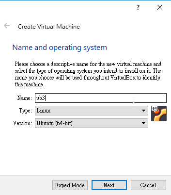
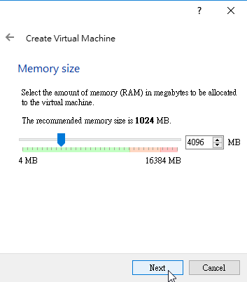
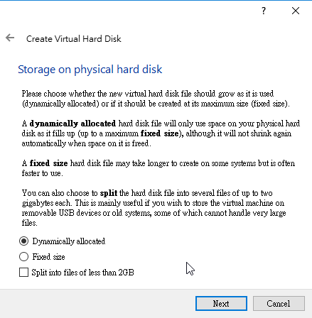
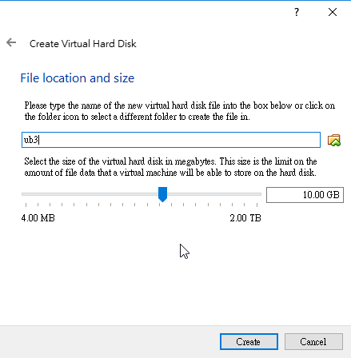
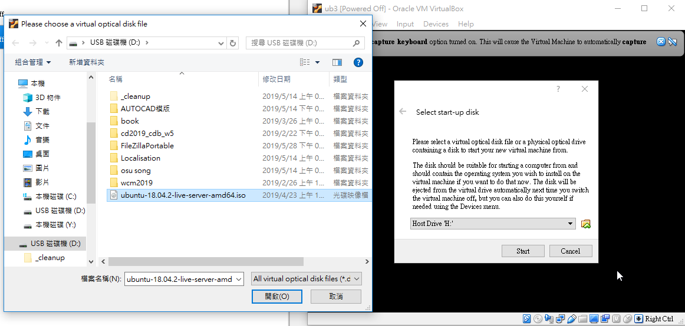
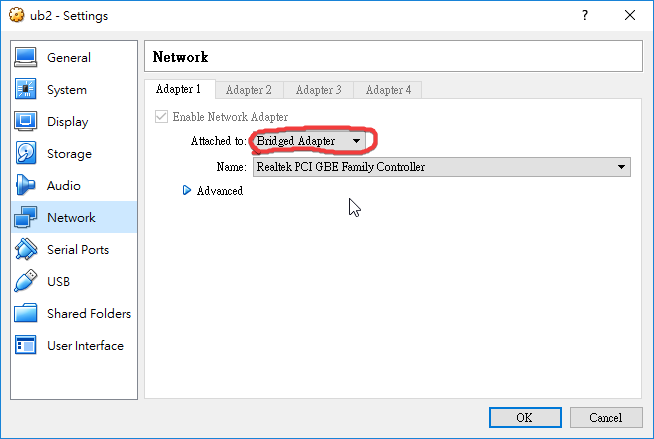
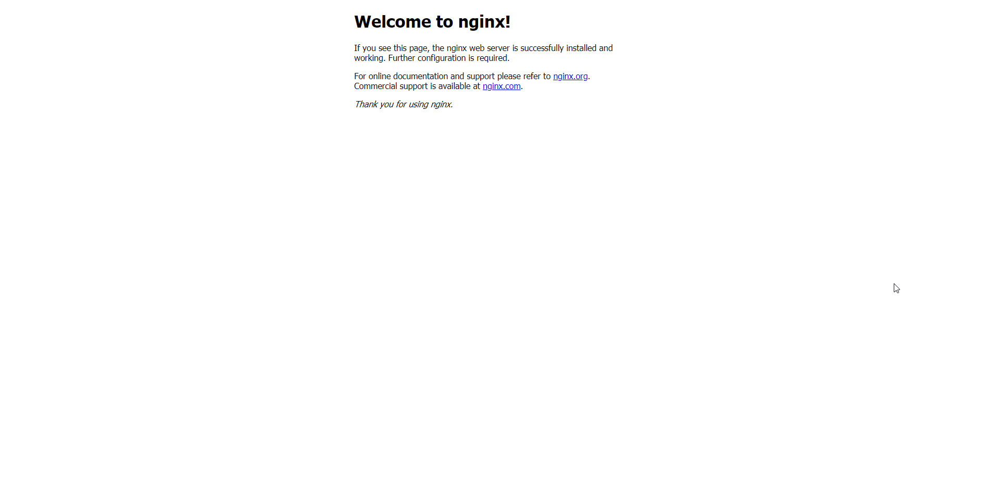
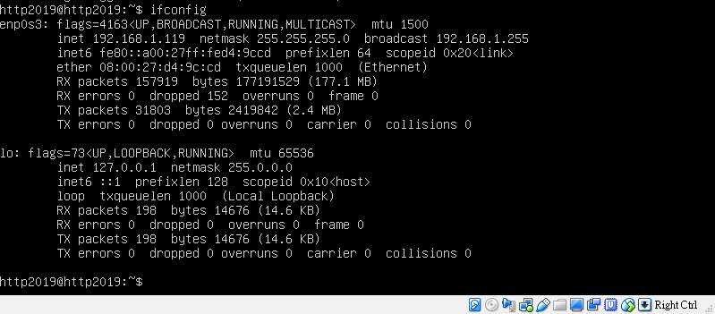

Virtual box
安裝最新版的 Virtualbox
建立 Ubuntu 18.04 虛擬主機，並完成設定

大小需移動到4096MB

選擇創造一個新的
選擇最上面的選項

ub的大小拖拉至500.00GB大(自行拉到500GB)

選擇的檔案為之前已存到隨身碟的ubuntu18.04檔案

以網路卡橋接啟動 Ubuntu 伺服器

以 sudo apt install nginx 安裝 nginx WWW 伺服器

以 ifconfig 查 Ubuntu 伺服器的 IP, 測試 nginx 伺服器是否可以連線

以 Windows 10 下的 Filezilla client, 將編輯好的 nginx 設定檔案送到 Ubuntu

利用 Ubuntu 指令將設定檔案搬至設定位置後, 以 /etc/init.d/nginx restart 重新啟動 nginx
在 Ubuntu 中以 sudo apt install uwsgi 安裝 uwsgi
在 Windows 10 編輯 uwsgi 與 nginx 所需的設定檔案, 完成後以 filezilla 送至 Ubuntu.
將 CMSimfly 程式碼送到 Ubuntu 伺服器中對應目錄後.
在 Ubuntu 建立 cmsimfly 服務, 並設定隨機啟動.
完成後, 在 Windows 10 以瀏覽器連線至 CMSimfly, 確認動態網頁與靜態網頁可以在虛擬主機中正常啟動.
以上相關網際內容管理在機械工程相關應用可參考: https://www.driveworks.co.uk 或 https://robotbenchmark.net/
以上資料可從https://2019wcm.blogspot.com/網際網路內容管理示範網誌找到
W15虎科大VPN設定 << Previous